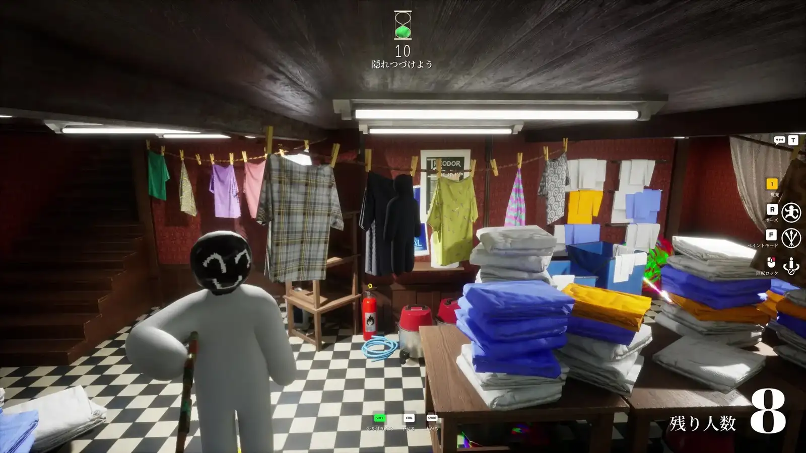

周末跟朋友躲猫猫，我蹲在书架后面听着搜索者的脚步声离我三厘米又走远
一次和朋友开黑的真实经历：从搜不到房间、脚步声定位搞反、到最后学会冻结纪律彻底隐身，Meccha Chameleon 把躲猫猫这件事做到了极致。
周五晚上十一点半，室友在隔壁打他的排位赛，我在自己电脑前盯着 Steam 好友列表——三个人在线，群里刚弹了条消息：「开黑？躲猫猫局。」
我对躲猫猫的印象还停留在初中那会儿在小区楼道里追跑打闹。朋友说的那个叫 Meccha Chameleon 的游戏我没听过，去meccha chameleon官网扫了一眼才知道是个藏身份对战的躲猫猫游戏——他还说在 Twitch 上刷到一个主播玩得特别疯，整个直播间在喊「冻住！别抖！」。我心想不就是个休闲小游戏嘛，从官方下载下一个试试。
然后我就为这个决定花了整整两个小时在 Lobby 里，没真正进过一局。
第一关：搜朋友的房间搜了四十分钟
朋友贴过来一个房间名，说"直接搜，密码是 1234"。我打开 Find Private Server，一字不差敲进去——搜不到。我想可能是房间名里有空格或者标点我没敲对，让他把完整的房间名代码块贴过来。好，复制粘贴，还是搜不到。
"你确认 Lobby 开着吗？"我问。
"我就在 Lobby 里啊。"
"Region 选的什么？"
"Asia，你呢？"
我一看自己选的是 North America。改过来，再搜——还是没有。
这时候另一个朋友也进来了，说他一开始搜不到是因为朋友刚 patch 完，build string 不一样。我们三个人去主菜单角落对比那串字符，果然我和 Host 的差了一位。验证游戏文件，重启 Steam，Host 换了个全新的房间名——这才终于连上。
后来去meccha chameleon文档翻了一下才知道，这个房间搜索是完全精确匹配的，大小写、空格、标点符号一个都不能错。而且 patch day 之后旧房间名会变成 ghost session，EOS 后端不会对外返回。这些如果不是撞大运碰上了，我可能还会在 Lobby 里耗更久。
搜房间这事儿听起来简单，但就是这第一道坎，把不少第一次玩的人劝退了。
第二关：Seeker 的耳朵比我的眼睛还灵
好不容易进到游戏里，我被分到 Hider 阵营。Prep 阶段我找了个书架，Eyedropper 采样，喷漆，选了个蹲着的 pose，自我感觉良好。号角一吹，Hunt 开始。
我缩在书架后面一动不动。然后我听到了脚步声。
不是"好像有人来了"那种模糊的感觉——是非常清晰、非常精确的方向感，从我的左边 wing 往这边走，越来越近。我紧张得攥紧了鼠标。朋友在 Discord 里小声说："Whistle 从左 wing 过来了，两个人。"
我这时候才发现一件事：我之前没关 Windows Spatial Audio。
空间音频开着的时候，Whistle 和脚步声的方向感会被打散，变成一种"从四面八方来"的模糊体感。本来从左边来的声音，我可能会听成前后左右都有。Seeker 靠这个方向感扫 prop 簇，听反了就浪费十秒；Hider 如果判断错 Seeker 的位置，一动就是暴露。
关掉空间音频之后，耳机里的世界突然清晰了。左边来的声音就是从左边来的，右边的脚步声就是右边的。那一刻我才明白，为什么有人说 Seeker 没有 minimap，没有 live radar，只有耳朵和眼睛。
第三关：冻结纪律——脚步声到你面前三厘米，你还能不动吗
第二局，我换了个新学到的策略。朋友说，Hider 被扫出来的第一原因不是喷漆不行，也不是姿势不准——是 Hunt 阶段动了。社区数据说 movement 和 camera tilt 加起来占了 42% 的暴露率，喷漆和 pose 加起来才 45%。
也就是说，哪怕你喷漆和姿势都完美，但只要号角响之后你抖一下、转一下相机，暴露概率就接近一半。
这听起来反直觉。我之前总觉得"姿势没摆好，要不要微调一下"——但实际上，Prep 最后一秒的姿势就是你应该保持的姿势，从 Hunt 号角响起的那一刻起，你应该完全变成一块石头。
那局我选了个靠墙的 prop，Prep 阶段最后一秒确认了喷漆和 pose，然后就定住了。号角响，我眼睛固定看一个点，不动，不转相机，甚至不呼吸（当然还是在呼吸，但身体完全没动）。
然后 Seeker 来了。
他从我左边 wing 扫过来，脚步声越来越近。我听到他用 Intel Pulse 扫了一下附近的 prop 簇，没扫到我。然后他走到我面前——真的就站在我面前不到一米——停下来了。
那五秒钟是我整个周五晚上最紧张的时刻。我的本能反应是"他在看我！要不要调整姿势？要不要更用力地站稳？"但我忍住了。我彻底不动。他就站在那儿，我能听到他的呼吸声（耳机太清楚了），然后他转身走了。
走了之后我又等了十秒才松口气。朋友后来告诉我，Seeker 可能只是绕个圈回来——走过去不代表安全。
那局我活到了最后。Infection 模式下队友一个个变成 Seeker，我还是冻在那个墙角，直到倒计时归零。
第四关：画质、Host、还有那些容易被忽略的细节
游戏玩得越多，我越发现这个游戏的三类角色对画质的需求完全不一样。
我做 Hider 的时候，Prep 阶段的 FPS 稳定比什么都重要。FPS 掉帧的时候 Eyedropper 采样会漂移，喷漆不准等于 Hunt 直接暴露。所以 Shadows 我都开 Medium 甚至 Low，Render Scale 降到 85%。
做 Seeker 的时候反过来，我要对比度和阴影来扫 gloss 和 ceiling cone，Render Scale 拉到 100% 以上，Contrast 手动调高。
朋友做 Host 的时候更惨——他那台笔记本插着电源线，全部画质拉 Low，就为了保证 CPU 不瓶颈、upload 够。他说笔记本做 Host 一定要插电源，battery mode 会严重降频。
Patch 之后还有个坑：画质会被重置回默认。朋友上周 patch 完没检查，Lobby 里所有人的画质都被改了，六个人卡得像 PPT。

一个周五晚上的小复盘
整个周五晚上我大概打了十来局，活下来的有三局。朋友说我已经比他第一次玩强了——他第一次玩的时候没关空间音频，把 Seeker 引到自己脸上都不知道。
这个游戏最有意思的地方不是躲起来不被发现，而是整个过程里那种极度的紧绷感。当 Seeker 的脚步声真的就在你面前的时候，你身体的每一个细胞都在喊"动一下！调整一下！"，但你必须彻底不动。这种心理上的对抗比任何枪战游戏都刺激。
我现在才明白为什么 Twitch 上有人直播这个游戏能收到那么多弹幕。观众在屏幕前喊"冻住！别抖！"，和我在游戏里屏住呼吸的那一刻，是完全同频的紧张。
Meccha Chameleon 就是这样一款游戏：上手门槛不高，但想要真正玩明白，你需要记住那些社区总结出来的小规则——房间名要精确匹配、关掉空间音频、Hunt 号角一响就变成石头。这些规则没有写在游戏里，需要你撞过几次墙、搜不到房间耗掉半小时、被 Seeker 三厘米距离扫到之后才会真正记住。
我的那个周末就是这么过来的。现在我可以在 Discord 里对着朋友喊"Whistle from right wing！"，可以在 Seeker 从我面前走过的时候彻底不动，而不是手抖着想去调姿势。从"搜不到房间"到"活到最后"，中间其实只隔了一本好的中文文档、一群愿意帮你排查的朋友、和一整晚的时间。
对了，这套资料除了文档站之外，我也顺手同步到了三个仓库，国内朋友访问不方便的话可以直接看 Gitee：GitHub、Gitee、GitCode。